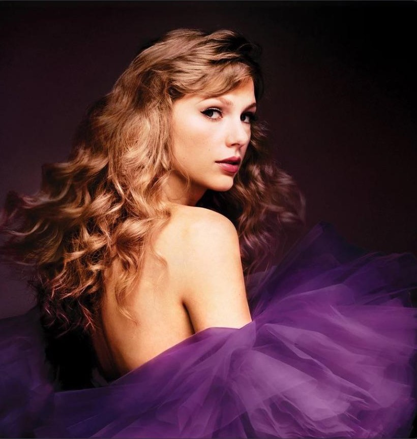

Anna is interested in fine art, classic art, digital art, Graphic Design, and User Interface Design (she has a UI website dedicated to all of her UI design projects).

In terms of music, Anna loves listening to a wide variety of music genres: Pop, Indie, Folk, Soft rock, Classic, Country, Film score, EDM, Jazz, Blue, and K-pop. She is a Swiftie and loves listening to Taylor Swift's music almost on a daily basis.
